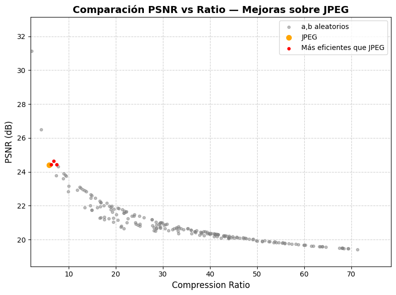

Challenge
Implement an image compression algorithm that surpasses the JPEG standard in terms of compression-quality ratio (PSNR) for certain configurations.
Implementation
I developed a complete codec from scratch that includes:
- Conversion from RGB to YCbCr color space
- Image division into 8x8 pixel blocks
- Application of Discrete Cosine Transform (DCT) to each block
- Quantization using custom matrices
- Encoding through zig-zag pattern and RLE (Run-Length Encoding)
- Efficient storage using pickle
Optimization
Instead of using the standard JPEG quantization matrix, I implemented a random search system to find more efficient matrices defined as Q(i,j) = a + b(i+j). I performed 200 iterations with random values of a (3-100) and b (1-40).
Key Results
Comparison with JPEG
I found 3 configurations that surpassed JPEG:
- a=17, b=3: PSNR=24.65 dB, Ratio=6.83
- a=24, b=2: PSNR=24.44 dB, Ratio=7.43
- a=4, b=6: PSNR=24.44 dB, Ratio=6.24
Compared to JPEG result: PSNR=24.41 dB, Ratio=5.79
Visual Analysis
Although visual differences are minimal, quantitative metrics demonstrate significant improvement. The algorithm achieves higher compression while maintaining or improving image quality.
This result shows that the standard JPEG quantization matrix is not universally optimal and can be improved for specific images.
PSNR vs Compression Ratio (200 Experiments)
This scatter plot compares JPEG against 200 random quantization matrices tested. The green points represent the three configurations that surpassed JPEG in both PSNR and compression ratio.
